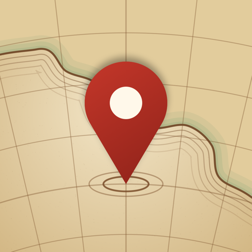
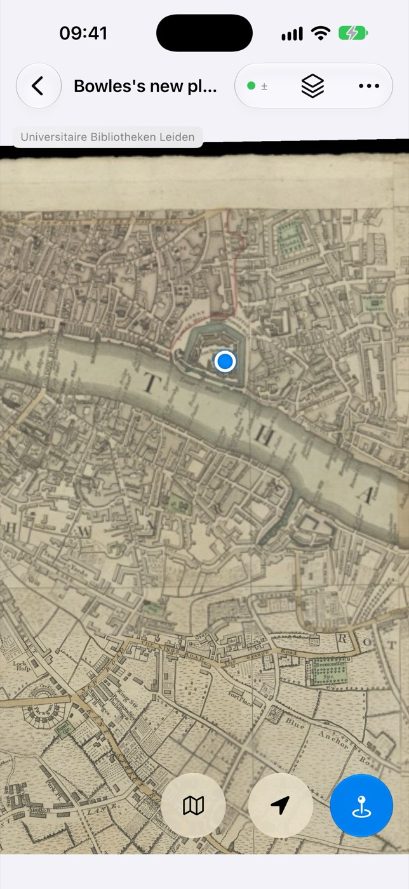
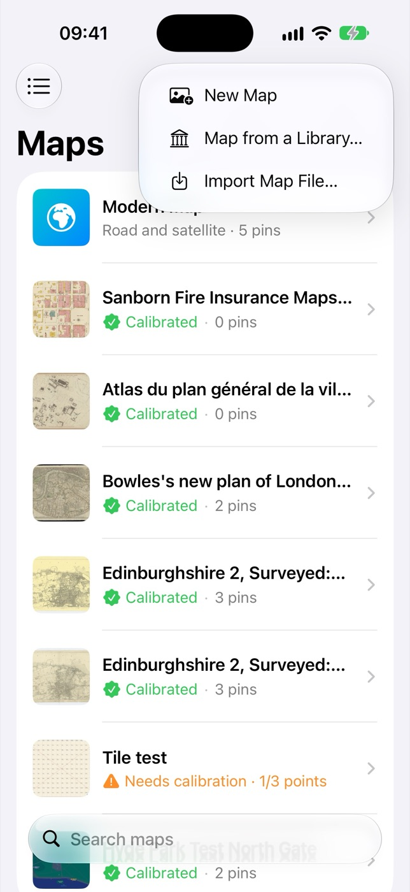
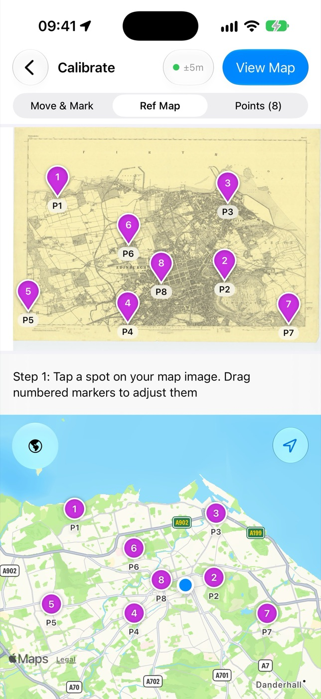
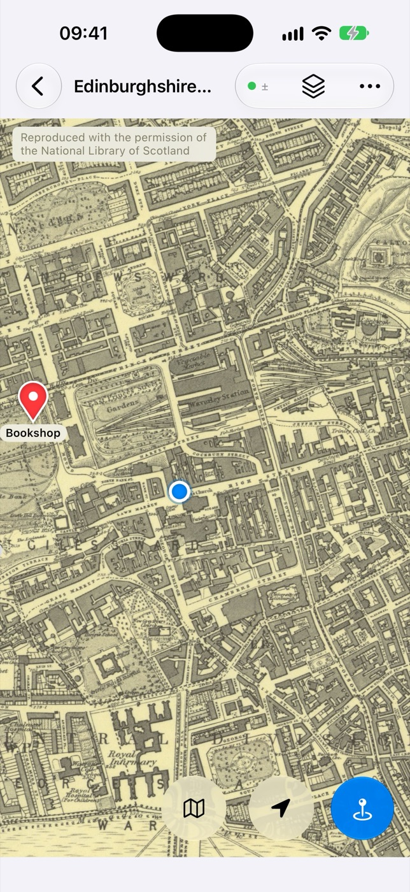
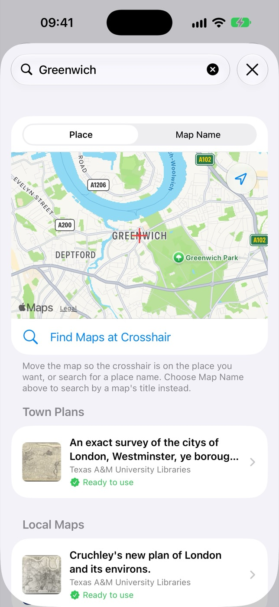

Terra Nota
Terra Nota
Find yourself on any map.
Terra Nota puts a live “you are here” dot on any map image, old or new. Bring an antique county map, a trail leaflet or a site plan, match a few places on it to the real world, then go and explore it.
For iPhone and iPad.

How it works
From paper to “you are here” in three steps.
No special file formats and no surveying know-how. If you can point at a church or a crossroads on a map, you can calibrate it.

Add a map
Use a scan, a photo you take on the spot, a screenshot or a file. Or pick one from a library’s collection.

Match a few places
Mark three or more points on the map and show where each one is on a modern map. Terra Nota works out the rest, even for maps that are stretched or hand-drawn.

Head out
See where you are on the map as you move, with north at the top. Drop pins for the things you find.
Features
Made for maps that weren’t made for phones.
Old maps are rarely to scale, rarely square and not always drawn with north at the top. Terra Nota is built around that.
Live position
Your location as a dot on your own map, following its quirks rather than a modern grid. Centre on yourself with one tap.
Even or Flexible fit
Keep a surveyed map’s straight lines, or let the fit bend to follow a sketchy hand-drawn plan. Each point shows how well it agrees with the rest.
North up, or your way
Maps open turned to north. Twist with two fingers to line one up with the street in front of you.
Pins and lists
Drop pins where you stand or anywhere on the map, with a photo if you like. Sort them into coloured lists that appear on every map of the area.
Every map of a place
Jump between all your maps of the spot you’re looking at, from an 18th-century estate plan to today’s satellite view, at the same place and scale.
On all your devices
Maps, points and pins sync through your own iCloud, so a map you calibrate on your iPad is ready on your iPhone.

Maps from libraries
Tens of thousands of historic maps, ready to explore.
No map to hand? Search by place and open historic maps straight from library collections.
- National Library of Scotland: Ordnance Survey sheets and more, covering Great Britain in detail.
- Libraries Worldwide: maps from collections such as the David Rumsey Map Collection and the Bibliothèque nationale de France, already georeferenced by the Allmaps community, so there’s nothing to calibrate.
Each map shows its source and licence, with a link back to the library that holds it.
Privacy
Your maps are yours.
There are no accounts and no servers of ours. Your maps, pins and location stay on your device and in your own iCloud, and we never see them. Read the privacy policy.